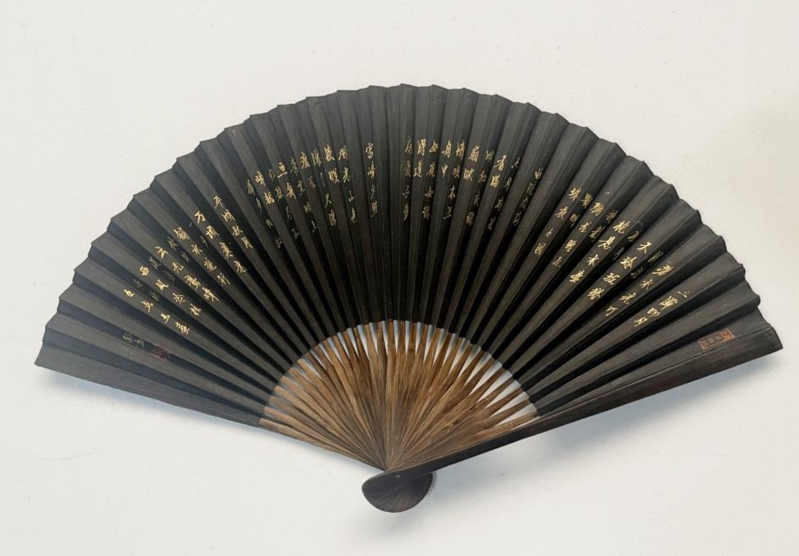
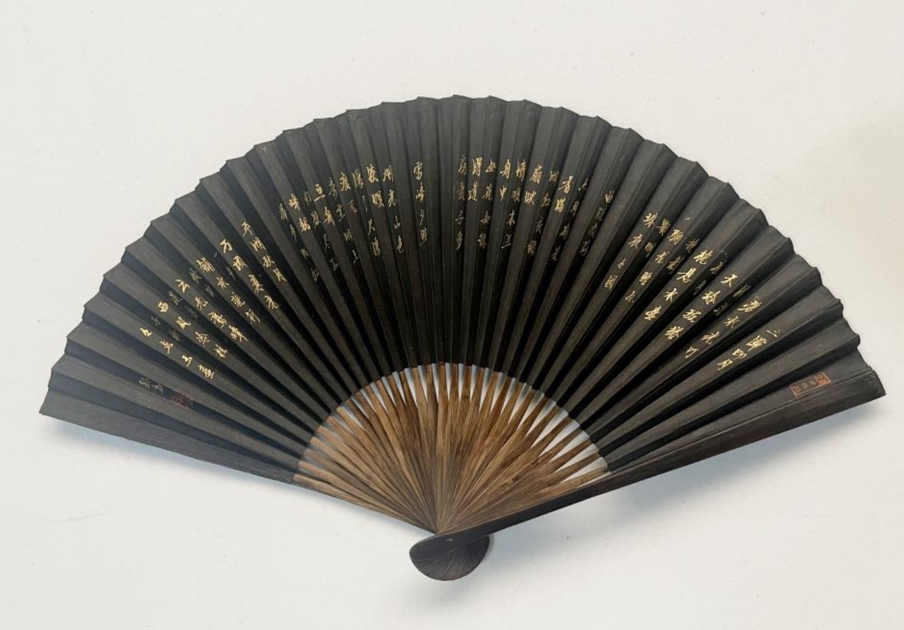

Hangzhou Black Paper Fan 杭州黑纸扇
Black Paper Fan
黑纸扇作为国家级非物质文化遗产，是一项深深植根于中国文化的传统工艺。作为这一独特艺术形式的传承人，我在学校创立了乐扇会，在那里我向学生们传授这门工艺。此外，我还前往杭州的一家福利中心，指导孩子们在扇面上绘画。
黑纸扇起源于杭州，采用耐用的黑纸和竹制或木制扇骨制作而成，以其优雅的设计和精湛的工艺而闻名。它不仅是一种实用工具，也是文化遗产和艺术表达的象征。黑色的纸面为传统绘画或书法提供了完美的画布，使每把扇子都成为一件艺术品。
除了美观之外，黑纸扇还具有非常耐用的特性，能够在沸水中浸泡40多个小时而不会使扇面与扇骨分离。这种耐久性反映了高质量的工艺和材料，确保了扇子持久的价值和文化意义。
English Translation：
The Black Paper Fan, recognized as a national intangible cultural heritage, is a traditional craft deeply rooted in Chinese culture. As an inheritor of this unique art form, I established the Fun Fan Club at my school, where I teach students about this craft. Additionally, I visit a welfare center in Hangzhou to guide children in painting on fans.
Originating from Hangzhou, the black paper fan is crafted with durable black paper and bamboo or wood frames, celebrated for its elegant design and intricate craftsmanship. It serves not only as a practical tool but also as a symbol of cultural heritage and artistic expression. The dark paper provides the perfect canvas for traditional paintings or calligraphy, making each fan a work of art.
Beyond its beauty, the black paper fan is remarkably durable, capable of withstanding boiling water for 40+ hours without the fan surface detaching from the frame. This durability reflects the high-quality craftsmanship and materials used, ensuring the fan's long-lasting value and cultural significance.
Fun Fan Club’s Black Paper Fan Works Exhibition
（乐扇会的黑纸扇作品展示）
 

Individual Fan Works Showcase
（个人扇子作品展示）
Left fan face: This painting depicts the Nine-Colored Deer from Chinese legend. The Nine-Colored Deer is a divine creature in Buddhist stories, symbolizing kindness, wisdom, and sacredness. (讲述的是九色鹿的故事)
Right fan face: This poem tells the story of the author's pursuit of ideals, longing for kindred spirits, and ultimately finding spiritual refuge in a secluded place. (讲述的是作者对理想的追寻，对知己的渴望，以及最终在某个归隐之地找到归宿的故事)
Left fan face: This painting depicts the Nine-Colored Deer from Chinese legend. The Nine-Colored Deer is a divine creature in Buddhist stories, symbolizing kindness, wisdom, and sacredness. (讲述的是九色鹿的故事)
Right fan face: This poem tells the story of the author's pursuit of ideals, longing for kindred spirits, and ultimately finding spiritual refuge in a secluded place. (讲述的是作者对理想的追寻，对知己的渴望，以及最终在某个归隐之地找到归宿的故事)
Left fan face: This painting depicts the Nine-Colored Deer from Chinese legend. The Nine-Colored Deer is a divine creature in Buddhist stories, symbolizing kindness, wisdom, and sacredness. (讲述的是九色鹿的故事)
Right fan face: This poem tells the story of the author's pursuit of ideals, longing for kindred spirits, and ultimately finding spiritual refuge in a secluded place. (讲述的是作者对理想的追寻，对知己的渴望，以及最终在某个归隐之地找到归宿的故事)
Left fan face: This painting depicts the Nine-Colored Deer from Chinese legend. The Nine-Colored Deer is a divine creature in Buddhist stories, symbolizing kindness, wisdom, and sacredness. (讲述的是九色鹿的故事)
Right fan face: This poem tells the story of the author's pursuit of ideals, longing for kindred spirits, and ultimately finding spiritual refuge in a secluded place. (讲述的是作者对理想的追寻，对知己的渴望，以及最终在某个归隐之地找到归宿的故事)
Left fan face: This painting depicts the Nine-Colored Deer from Chinese legend. The Nine-Colored Deer is a divine creature in Buddhist stories, symbolizing kindness, wisdom, and sacredness. (讲述的是九色鹿的故事)
Right fan face: This poem tells the story of the author's pursuit of ideals, longing for kindred spirits, and ultimately finding spiritual refuge in a secluded place. (讲述的是作者对理想的追寻，对知己的渴望，以及最终在某个归隐之地找到归宿的故事)
Daily Records of Fan-making and a Glimpse of the Club
制扇日常记录以及俱乐部的一角
I am whittling bamboo, shaping it into fan ribs. 正在削竹子，制扇骨
I am sanding the surface of the fan ribs to make them smooth and even 正在磨扇骨表面，让其变得光滑平整
This is natural glue made from persimmons, used to connect fan ribs and surface 这是柿漆，用来连接扇面和扇骨
My craft master Chunnian is currently teaching me. We have known each other for 6 years. 我的师傅潘春年正在教导我，我们认识6年了。这是我制作扇子的位置
This is part of the Fun Fan Club's work collection 这是乐扇会的一部分作品
My workstation. 这是我的工位
The tool on the far left is a chisel, used for making holes. The tool in the middle is used for hammering fan rivets. The tool on the far right is a saw, used for cutting bamboo. 左边第一个工具是凿子，用于凿孔。中间的工具用于打扇钉。最右边的工具是锯子，用于锯竹。
The material used to color the black paper fans is called coal lacquer (meiqi), which comes from Fujian. It has a very strong ink-like smell, but it's not exactly the same as the scent of ink. 给黑纸扇上色的材料叫做煤漆，来自福建。有一股非常浓的墨水味道，但和墨水味道不完全一样。
I am teaching a class to my fellow students who are members of the Fun Fan Club. A group photo of us visiting the Fan Museum together. Daily activities of the club members. 我正在给同学们乐扇会的成员们上课；我们一起去扇博物馆参观的合照；成员们的活动日常